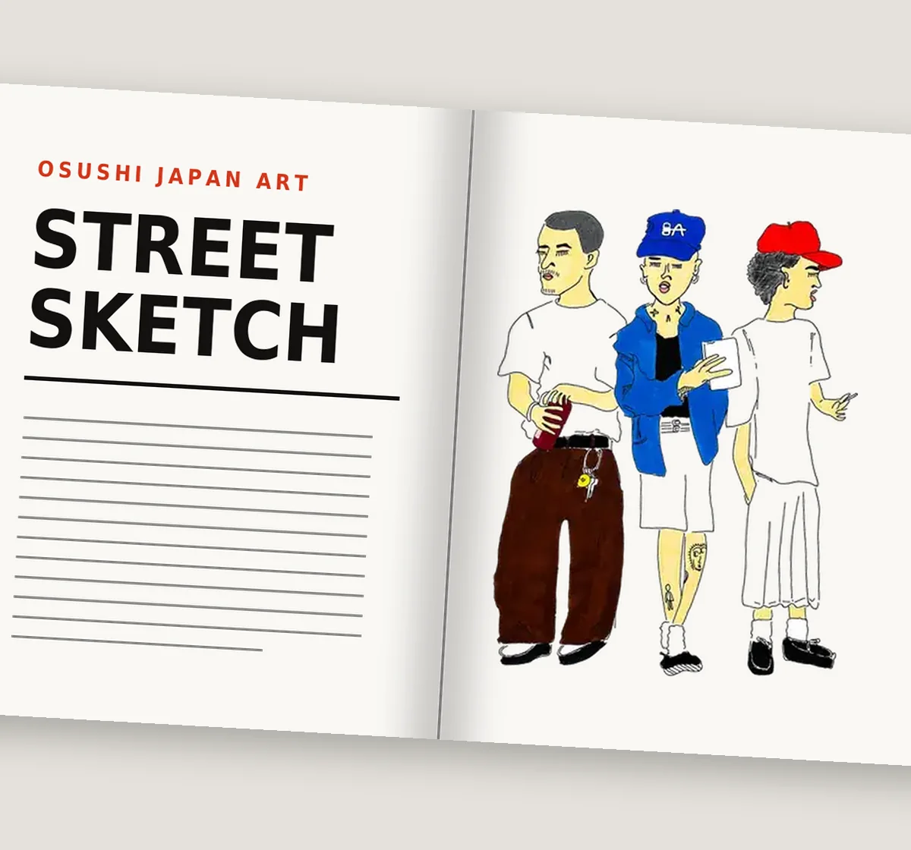
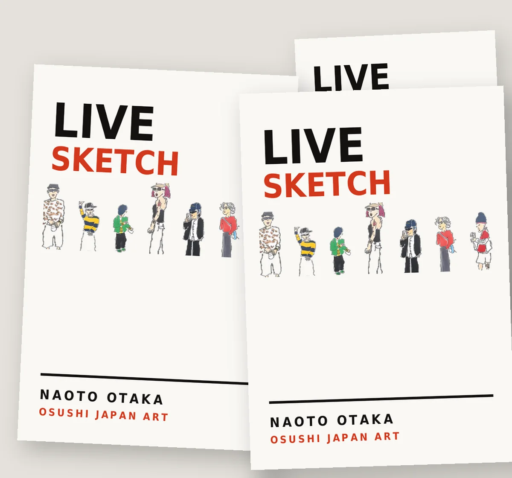
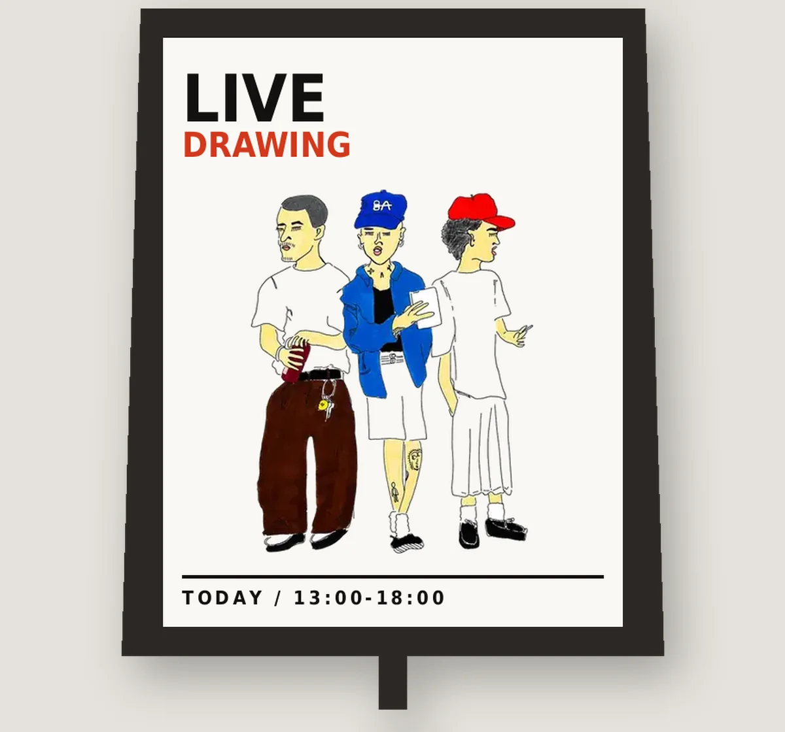
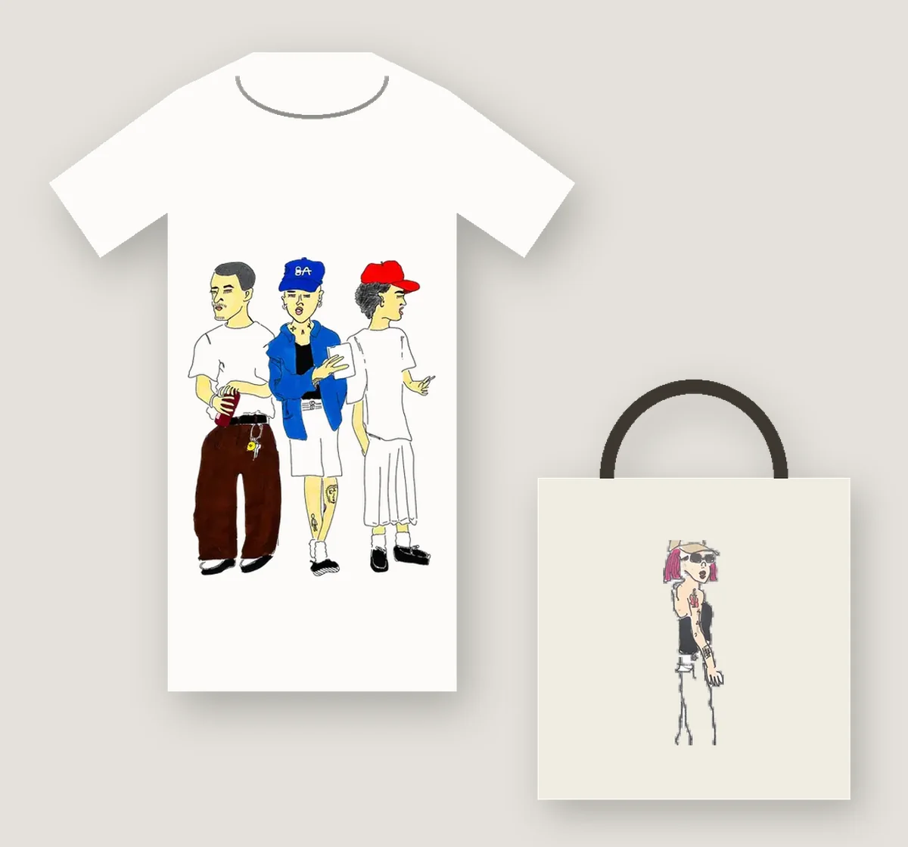
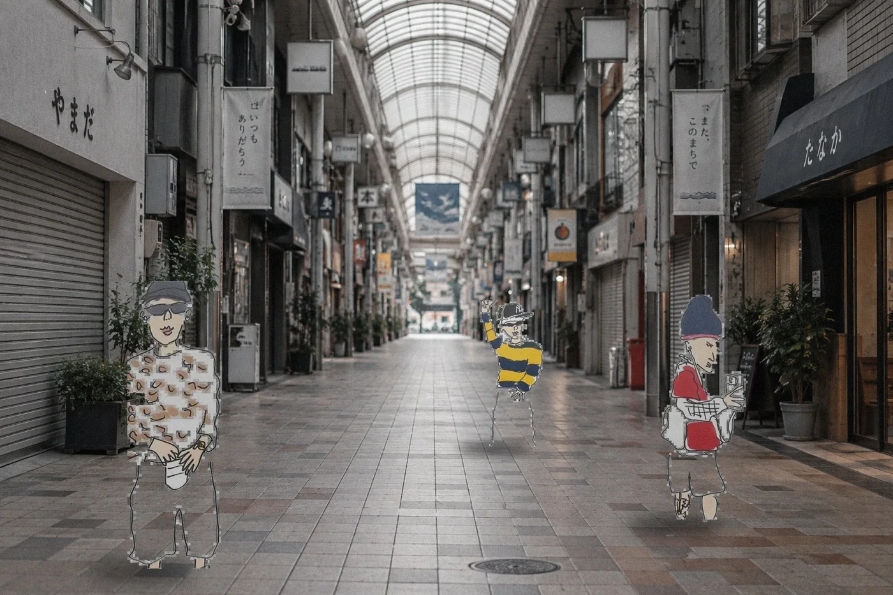
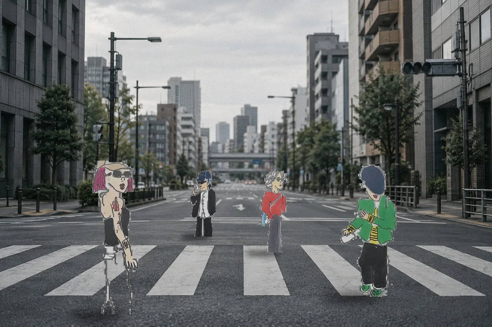
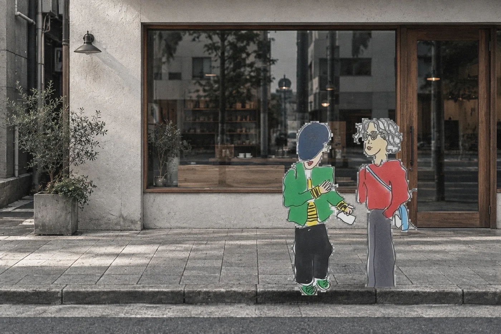

01-1 / ILLUSTRATION
イラスト制作
広告・雑誌・パッケージに使う一枚絵。

PRICED BY枚数用途掲載期間納期
01-2 / FASHION SKETCH
人物・ファッションスケッチ
服と、それを着ている人の雰囲気を描く。

PRICED BY点数仕上げ納期
01-3 / LIVE SKETCH
ライブスケッチ
会場に伺って、その場でお客様を描く。

PRICED BY時間場所描く人数
01-4 / COLLABORATION
企業コラボ
商品やキャンペーンをご一緒する。

PRICED BY期間展開範囲二次利用

02 / USES
対応できる用途
描いたものを、どこに出せるか。
- 雑誌・書籍EDITORIAL
- 広告・キャンペーンADVERTISING
- パッケージPACKAGE要確認
- アパレル・グッズAPPAREL
- 店舗・空間SPACE要確認
- イベントEVENT
- SNS・デジタルDIGITAL
- ロゴ・似顔絵PORTRAIT
破線の2つは印刷・施工が関わるため、内容をうかがったうえで可否をご回答します。
03 / FLOW
制作の流れ
お問い合わせから納品まで、9つの段階。
STEP 01 / 09
お問い合わせ
STEP 02 / 09
ヒアリング
STEP 03 / 09 いちばん大事
お見積り
STEP 04 / 09
ご発注
STEP 05 / 09
ラフ制作
STEP 06 / 09 いちばん大事
ラフのご確認
STEP 07 / 09
本制作
STEP 08 / 09
最終確認・納品
STEP 09 / 09
ご請求・お支払い

04 / PRICING
料金のこと
金額が何で決まるか。
ANSWER
いくらくらいかかりますか？
ANSWER
予算が決まっているのですが、相談できますか？
ANSWER
見積りをもらったあと、断っても大丈夫ですか？
ANSWER
交通費や宿泊費は別ですか？
05 / RIGHTS
権利のこと
描いた絵を、どこまで使えるか。
破線の項目は現在確認中です。決まり次第このページを更新します。
ANSWER
描いてもらった絵は、どこまで使えますか？
ANSWER
あとから別の媒体にも使いたくなったら？
ANSWER
著作権の譲渡はできますか？
ANSWER
クレジットの表記は必要ですか？
ANSWER
AIの学習に使われることはありますか？

06 / PRODUCTION
制作のこと
修正・納期・納品の形式。
破線の項目は現在確認中です。決まり次第このページを更新します。
ANSWER
修正は何回までできますか？
ANSWER
どれくらいで仕上がりますか？
ANSWER
納品はどんな形式ですか？
ANSWER
遠方でもライブスケッチに来てもらえますか？
ANSWER
ラフの段階で方向性を見せてもらえますか？
07 / BUSINESS
お取引のこと
源泉徴収・支払期日・請求書。
ANSWER
源泉徴収は必要ですか？
ANSWER
支払いのタイミングは？
ANSWER
発注書はこちらで用意する必要がありますか？
ANSWER
インボイスには対応していますか？
ANSWER
請求書の形式に指定があります。
ANSWER
NDAは結べますか？
ANSWER
お取引先の名義を教えてください。
ご相談・お見積り
用途や時期が決まっていない段階でも構いません。お見積りは無料で、お断りいただいても費用は発生しません。
© OSUSHI JAPAN ART / NAOTO OTAKA 大高直人 — 兵庫県加古郡播磨町